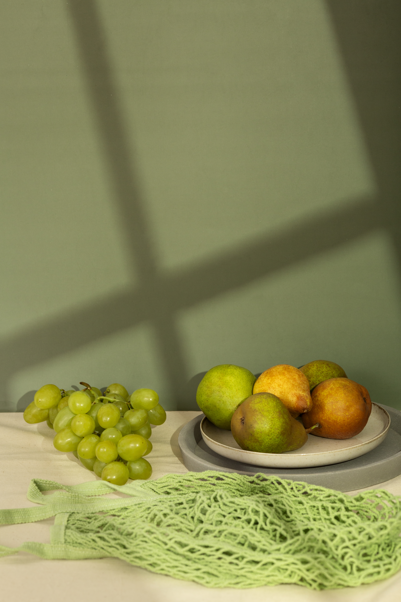

“Sự lo lắng không phải kẻ thù, cũng chẳng phải ác quỷ.
Nó giống như một người đang bảo vệ bạn quá mức vì từng thấy bạn tổn thương nên nó muốn giữ bạn được an toàn.”
Có bao giờ trong một buổi tối thanh vắng, khi mọi việc xung quanh tưởng chừng đều êm ả, trong lòng bạn lại bất ngờ dấy lên một cảm giác bồn chồn khó tả? Một tin nhắn chưa có hồi âm, một dự án sắp bắt đầu, hay chỉ đơn giản là một kịch bản tồi tệ mà tâm trí tự vẽ ra... Sự lo lắng ập đến như những con sóng ngầm, khiến lồng ngực bạn thắt lại và giấc ngủ tan biến.
Phản ứng tự nhiên của hầu hết chúng ta là bực bội và dằn vặt chính mình: "Tại sao mình lại yếu đuối như vậy?", "Tại sao mình cứ overthinking mãi thế này?", "Làm ơn hãy biến đi!". Chúng ta coi sự lo âu như một con quái vật đáng ghét đang phá hoại cuộc sống, và ta dùng tất cả sự thô bạo của tâm trí để cố gắng đè nén, xua đuổi hay tiêu diệt nó.
Thế nhưng, bạn càng cố đuổi, nó lại càng bám riết. Bạn càng cố dập tắt, tiếng còi báo động trong đầu lại càng vang lên inh ỏi. Vì sao vậy?

🕯️ Nguồn cơn của người vệ sĩ mang tên "Lo Lắng"
Trong tâm lý học chiều sâu, sự lo lắng (Anxiety) không phải sinh ra để hãm hại bạn. Nó xuất hiện từ một tiền đề cảm động: Nó từng thấy bạn bị tổn thương trong quá khứ.
Tiềm thức của bạn lưu giữ ký ức rất sâu sắc. Nó nhớ như in những lần đứa trẻ bên trong bạn từng bị bỏ rơi, từng thất bại ê chề, từng bị lừa dối, hay từng phải chịu đựng sự cô độc đớn đau mà không ai cứu giúp. Vì nỗi đau ngày ấy quá lớn, tiềm thức đã vội vã cắt cử ra một "người vệ sĩ" trung thành.
Người vệ sĩ ấy tự nhủ: "Mình sẽ không bao giờ để chủ nhân phải chịu thêm một vết trầy xước nào nữa."
Và thế là, người vệ sĩ ấy bắt đầu quan sát mọi thứ với con mắt cảnh giác cao độ. Chỉ cần có một chút biến động nhỏ, anh ta liền gióng chuông báo động, giơ tấm khiên chắn lên, bắt bạn phải nghi ngờ, phải chuẩn bị cho kịch bản xấu nhất. Anh ta bảo vệ bạn một cách quá mức (overprotective), vụng về và hoảng loạn — hệt như một người cha mẹ vì sợ con vấp ngã nên cấm con không được bước ra khỏi phòng.
Khi bạn đối xử thô bạo với sự lo lắng — khi bạn gắt gỏng, mắng nhiếc hay căm ghét nó — người vệ sĩ ấy sẽ nghĩ rằng: "Thấy chưa? Ngay cả chủ nhân cũng đang hoảng loạn! Nguy hiểm thực sự đang ở quanh đây rồi!". Và kết quả là, anh ta lại càng siết chặt vòng tay bảo hộ, khiến bạn càng ngột ngạt và lo sợ hơn gấp bội.

🌿 Học cách hòa giải: Đừng đánh đuổi, hãy chứng minh!
Muốn người vệ sĩ ấy buông lơi tấm khiên, vũ lực không bao giờ có tác dụng. Cách duy nhất là sự thấu hiểu và chứng minh:
Lần tới, khi cảm giác lo âu bất an bủa vây, xin bạn đừng vội xua đuổi. Hãy đặt một tay lên ngực áo, hít một hơi thật sâu và khẽ thì thầm với người vệ sĩ bên trong mình:
"Tôi biết bạn đang lo lắng cho tôi. Tôi biết bạn sợ tôi lại bị tổn thương như ngày xưa. Cảm ơn bạn vì đã luôn thức trắng đêm để bảo vệ tôi suốt những năm tháng qua."
Và quan trọng nhất, hãy dùng chính cuộc sống hiện tại để chứng minh cho người vệ sĩ ấy thấy: Bạn của ngày hôm nay không còn là đứa trẻ bất lực năm nào nữa.
Bạn đã lớn khôn, đã có trí tuệ, đã có kinh nghiệm và đã có đủ sự vững chãi để chịu trách nhiệm cho cuộc đời mình. Dù ngày mai có bão giông hay thử thách, bạn hoàn toàn có đủ năng lực để tự che chở và tự băng bó cho chính mình.
Khi người vệ sĩ cảm nhận được sự vững vàng, bình an và niềm tin thực sự toát ra từ bạn, anh ta sẽ khẽ mỉm cười nhẹ nhõm. Anh ta sẽ hiểu rằng nhiệm vụ cảnh giới của mình đã hoàn thành, rồi anh ta sẽ tự khắc buông khiên và lặng lẽ rời đi, trả lại cho bạn một khoảng trời trong trẻo và thanh thản. ✨